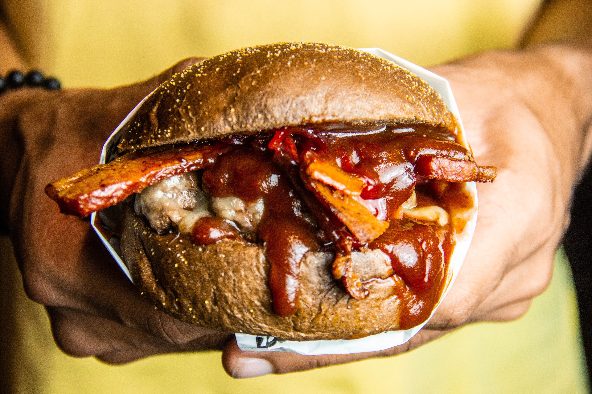

Everyday Categories
Everyday Food has developed recipes with the home cook in
mind. These delicious dishes featured on "EAT Paris" call
for simple ingredients that you already have in your
pantry or can easily find at local grocery stores and
farmers' markets.
Breakfast Most Important Meal
Cold-Weather Weeknight Dinners
Healthy Recipes of the Week
This week's top award winners to critically-acclaimed
recipe gems, check out these original recipes from
home cook and professional chefs around the country.
Where to Eat
This is not the aspirational fluff of Instagram wall
neon; It's fact. Recent surveys have shown that a
majority of travelers consider food first when planning
a trip, even ahead of where they sleep. Add to this
that people are also traveling more than ever before
– earthlings logged a record-breaking 1.4 billion
international trips last year – and it's safe to
say that the hunger for new culinary experiences is more
ravenous than ever.
While the endlessly alluring bistros of Paris, Izakayas
of Tokyo, shawarma stands of Tel Aviv, and tasting menus
of Mexico City will always top many people's lists of
cravings, we're continually on the lookout for something
new to fill our bellies, our passports, and our feeds.

Best Sandwiches in America
50 States of Pizza Slices